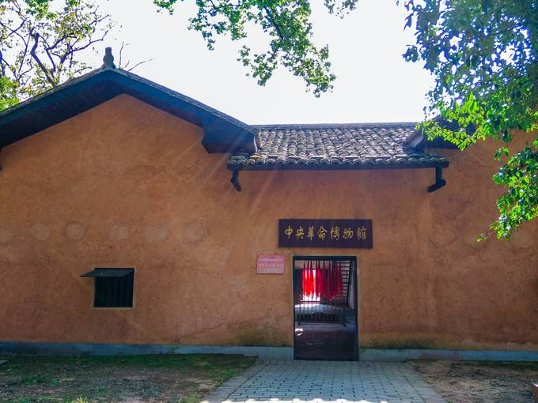

-
中华苏维埃

| 中华苏维埃共和国经过
1931年11月7日，中华苏维埃共和国临时中央政府在江西中央苏区成立，主席毛泽东，定都于瑞京（中央苏区-瑞金县），以中国工农红军作为国家的武装力量。
1934年10月，组建中华苏维埃中央政府办事处，统一领导中央苏区留守军民的斗争。
1935年5月，中共西北特委组建中华苏维埃共和国西北联邦。10月，中华苏维埃共和国中央政府抵达陕甘苏区。11月，中华苏维埃共和国变更对外名义称“中华苏维埃中央政府西北办事处”。12月，中华苏维埃政权改国名为“中华苏维埃人民共和国”，宣布迁都延安。
1936年，再度改国号为“中华苏维埃民主共和国”。
1937年9月6日，中华苏维埃民主共和国中央政府西北办事处更名“中华民国陕甘宁边区政府”。22日，正式结束苏维埃国家政权形式。
-
苏区主要领导人
 毛泽东
毛泽东 朱德
朱德 周恩来
周恩来 邓小平
邓小平 项英
项英 张国焘
张国焘 王稼祥
王稼祥 邓发
邓发 何叔衡
何叔衡 林伯渠
林伯渠 曾山
曾山 任弼时
任弼时 林彪
林彪 彭德怀
彭德怀 刘少奇
刘少奇 陈云
陈云 瞿秋白
瞿秋白 张闻天
张闻天 毛泽民
毛泽民 陈潭秋
陈潭秋 张鼎丞
张鼎丞 谢觉哉
谢觉哉 董必武
董必武 陈毅
陈毅 刘伯承
刘伯承 王震
王震 杨尚昆
杨尚昆 方志敏
方志敏 贺龙
贺龙 阮啸仙
阮啸仙 罗瑞卿
罗瑞卿 梁柏台
梁柏台 邓子恢
邓子恢 博古
博古 奥托·布劳恩
奥托·布劳恩 王明
王明
-
第二次全国苏维埃代表大会选举
博 古陈绍禹何克全刘少奇毛泽东项 英吴亮平瞿秋白周月林金维映黄发桂谢玉钦李富春谢名仁 萧世榜林国宋黄长娇蔡 畅钟葆元娄梦侠张绩之徐达志曾 山钟昌桃刘启耀钟循仁李卓然刘广臣 谢 先朱 德周恩来王稼祥刘伯承贺 昌何长工滕代远彭德怀杨尚昆林 彪聂荣臻董振堂刘伯坚 黄 苏蔡树藩聂洪钧王如痴万永诚陈 光寻淮洲罗瑞卿张纯清周建屏周 昆乐少华陈阿金袁国平 叶剑英陈 毅毕士梯陈洪时萧 克孔荷宠朱 瑞刘畴西徐彦刚陈昌浩徐向前张国焘张琴秋贺 龙 关向应夏 曦宋白民王维周罗炳辉洪 水蔡 乾张然和余宏文王世泰潘士忠姜阿三张冠一古大存 郑振芬朱 琪高俊亭詹以锦郑位三王凤鸣成仿吾郭述申张德三祝维垣顾作霖邵式平黄 道朱兆祥 孔书安刘 晓钟世斌傅才秀周义开刘明辉熊仙璧刘国珠钟桂新罗 迈陈祥生林伯渠刘群先胡 海 范乐春曾洪易巫子元张太和黄宜章张鼎丞李见珍吴兰甫吴必先邱先英张闻天陈 云王盛荣邓 发 陈潭秋潘汉年黄加高张云仙张金楼周少文何振吾陈寿昌黄光保谭余保刘士杰王 震旷 彪彭仁昌 任弼时吴德峰王秀章熊国炳余洪远李维海何 畏李先念曾广澜周光坤李成甲陈子谦方志敏余汉朝 黄万生汪金祥关 英涂振农关春香吴玉章朱地元杨其鑫邓振询何叔衡高自立梁柏台徐特立阮啸仙 邓颖超董必武赵 云王贤选罗梓铭杨世珠赖美玉

1．第二届中央执行委员会委员
(175人)
博 古陈绍禹何克全刘少奇毛泽东项 英吴亮平瞿秋白周月林金维映黄发桂谢玉钦李富春谢名仁 萧世榜林国宋黄长娇蔡 畅钟葆元娄梦侠张绩之徐达志曾 山钟昌桃刘启耀钟循仁李卓然刘广臣 谢 先朱 德周恩来王稼祥刘伯承贺 昌何长工滕代远彭德怀杨尚昆林 彪聂荣臻董振堂刘伯坚 黄 苏蔡树藩聂洪钧王如痴万永诚陈 光寻淮洲罗瑞卿张纯清周建屏周 昆乐少华陈阿金袁国平 叶剑英陈 毅毕士梯陈洪时萧 克孔荷宠朱 瑞刘畴西徐彦刚陈昌浩徐向前张国焘张琴秋贺 龙 关向应夏 曦宋白民王维周罗炳辉洪 水蔡 乾张然和余宏文王世泰潘士忠姜阿三张冠一古大存 郑振芬朱 琪高俊亭詹以锦郑位三王凤鸣成仿吾郭述申张德三祝维垣顾作霖邵式平黄 道朱兆祥 孔书安刘 晓钟世斌傅才秀周义开刘明辉熊仙璧刘国珠钟桂新罗 迈陈祥生林伯渠刘群先胡 海 范乐春曾洪易巫子元张太和黄宜章张鼎丞李见珍吴兰甫吴必先邱先英张闻天陈 云王盛荣邓 发 陈潭秋潘汉年黄加高张云仙张金楼周少文何振吾陈寿昌黄光保谭余保刘士杰王 震旷 彪彭仁昌 任弼时吴德峰王秀章熊国炳余洪远李维海何 畏李先念曾广澜周光坤李成甲陈子谦方志敏余汉朝 黄万生汪金祥关 英涂振农关春香吴玉章朱地元杨其鑫邓振询何叔衡高自立梁柏台徐特立阮啸仙 邓颖超董必武赵 云王贤选罗梓铭杨世珠赖美玉

2．候补中央执行委员
(36人)
杨炳龙谢振富邱时凤邓尧盛董长胜刘 毅李美群邹中才徐顺洹徐明富叶德贵邓子恢朱荣生贾 元冯雪峰李一氓李克农张爱萍罗荣桓李赐凡颜立记尹仁桂刘燕玉方敬和谢炳煌钟义瑾黄富武方振华邹敦厚廖汉华龙春山华新湘周桂香旷朱权邓 萍康克清
3．中央工农检查委员会委员
(35人)
农 钿朱克盛李生保滕代远罗荣桓蔡 畅黄长娇罗元杰谢学连刘列珠范乐春黎莲秀赖荣光王孚善曾昭明胡美水冷 仪张炳如邹芳禧董必武王 秀康保贵吕广运邓先钊刘传家王汉章殷松瑞叶胜芳张 标刘进文庐同好张振芳项 英吴秀英丘荣光
4．第二届中央执行委员会第一次会议选举中央执行委员会主席团成员
(17人)
毛泽东项 英张国焘朱 德张闻天博 古周恩来瞿秋白刘少奇陈 云林伯渠邓振询朱地元邓 发方志敏罗 迈周月林
-
北京市文物局“历史文化名城与古迹”项目支出

-
图片故事
无论哪一个巍峨的古城楼或是一角倾颓的殿基的灵魂里，
无形中都在诉说，乃至歌唱，时间上漫不可信的变迁。
（梁思成、林徽因）
以下四处古建是四个典型，它们代表了北京大部分古建在新中国时期的命运。